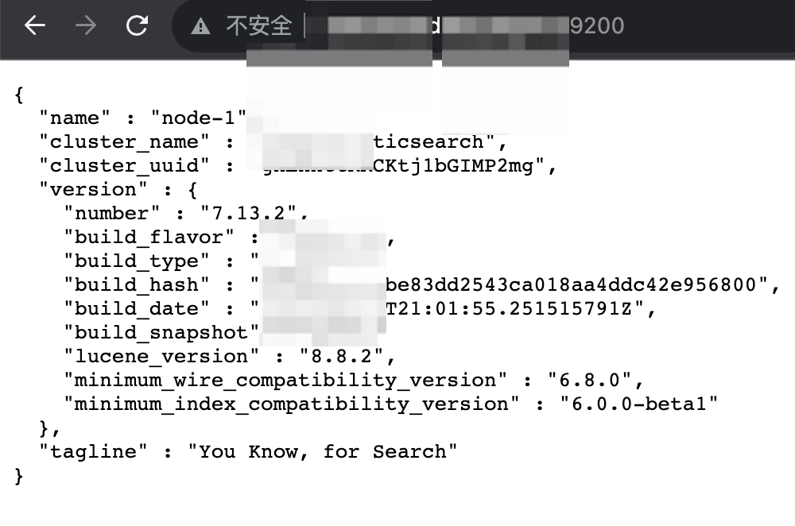

elastic search
目录
数据库+快速数据搜索引擎
探测
默认端口
9200
版本
未授权或登录后，直接访问首页

渗透
未授权
HTTP协议访问默认端口端口 9200 返回内容中包含”You Know, for Search”，则有未授权
默认用户与口令
elastic（这是超级用户！Elasticsearch的旧版本具有该用户的默认密码changeme）
logstash_system
kibana_system
apm_system
beats_system
remote_monitoring_user
后渗透
查询有用的数据
curl 'localhost:9200/_cat/indices?v #列出所有索引
curl 'localhost:9200/_plugin/head/ #ES的head插件，可以对es数据库进行各种设置和数据检索功能的 管理插件
curl 'localhost:9200/_cat/nodes?v #可以获取集群的节点列表
curl 'localhost:9200/_nodes?prettify #节点设置
curl 'localhost:9200/_status #查看状态
curl 'localhost:9200/_search?pretty #查询所有索引 默认前10条
curl 'localhost:9200/zjftu/_search?pretty #查询某一个索引
查询，设置查询条数
POST
{"query": { "match_all": {} },"from":0,"size": 100}
dump数据
es2csv
>From source:
$ pip install git+https://github.com/taraslayshchuk/es2csv.git
>From pip:
$ pip install es2csv